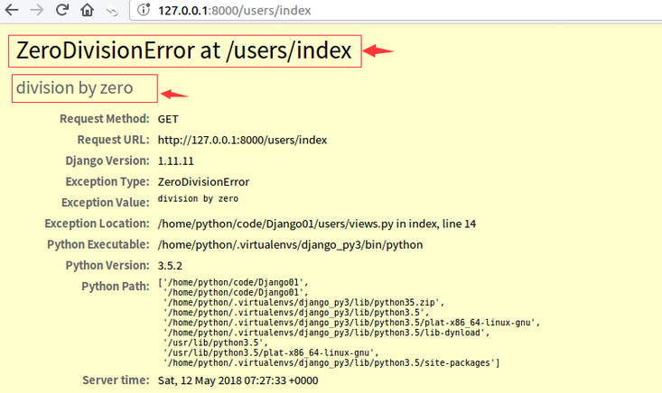
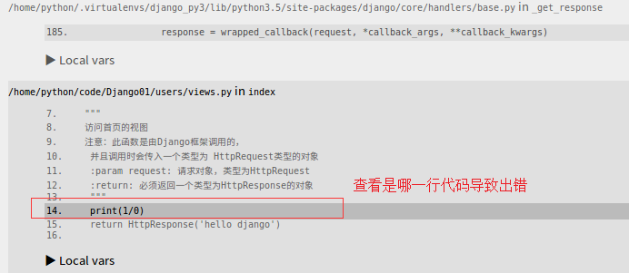
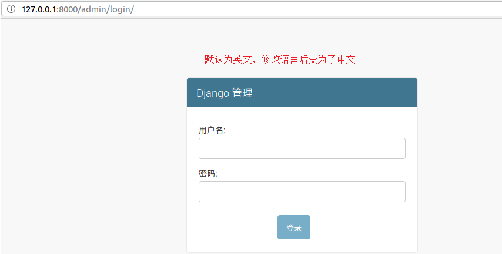
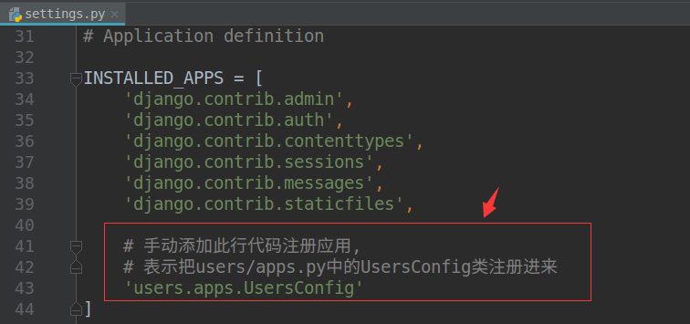

项目常用配置
在项目的 setting.py 配置文件中，进行项目相关配置的修改。
1. BASE_DIR
BASE_DIR = os.path.dirname(os.path.dirname(os.path.abspath(__file__)))
当前项目的根目录，Django会依此来定位工程内的相关文件，我们也可以使用该参数来构造文件路径。
2. DEBUG
- 含义：是否为调试模式（开发模式），默认为
True 作用：当
DEBUG为True时，如果Django程序运行出现异常时，会在浏览器显示详细的出错调试信息（如下图），而非调试模式下，不会显示出错调试信息
【重要】项目运行出错了，需要查看是哪里一行代码造成出错，再进行分析解决

注意：项目上线应该设置为
False关闭调试模式，并且要同时设置ALLOWED_HOSTS参数# 关闭调试模式 DEBUG = True # 设置允许通过哪些主机访问， * 表示匹配所有（ip） ALLOWED_HOSTS = ['*']
3. 本地语言与时区
项目本地化配置
- Django支持本地化处理，即显示语言与时区
新创建的Django项目，默认使用的语言为
英语，时区为UTC标准时区LANGUAGE_CODE = 'en-us' # 语言 TIME_ZONE = 'UTC' # 时区配置修改： 将语言和时区修改为中国大陆信息
LANGUAGE_CODE = 'zh-hans' # 语言设置为 中文 TIME_ZONE = 'Asia/Shanghai' # 时区设置为 亚洲/上海，注意没有北京
测试
django自带了管理后台模块，可以通过
http://127.0.0.1:8000/admin/login访问，默认显示为英文修改上述参数后，再次访问，确认是否会显示为中文

4. App应用配置
- 在每个应用目录中都包含了
apps.py文件，用于保存该应用的相关信息 在创建应用时，Django会向
apps.py文件中写入一个该应用的配置类，如下from django.apps import AppConfig class UsersConfig(AppConfig): # 表示这个配置类是加载到哪个应用的， # 每个配置类必须包含此属性，默认自动生成 name = 'users'应用配置： 需要在项目配置文件
settings.py中的INSTALLED_APPS列表中，注册创建出来的应用，示例：
配置说明
- 用pycharm创建的项目，默认已经是注册了应用的，不需要作额外配置，针对新创建的应用（或命令行创建的应用）需要作此配置
- 作用：注册应用后，后续开发中，针对该应用中定义的模型类，才会生成对应的数据库表；